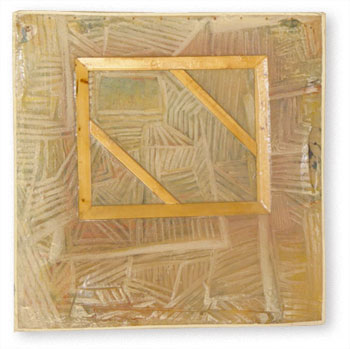

El Marco  El marco aísla pero también
deja cifrado el modo en que se ha de entrar al enmarcado. Dicho de otro
modo, el marco es un elemento sintáctico (más allá
del encuadre) que viene a articular dos lenguajes disímiles: el
de la realidad y el de la representación, el del espacio tridimensional
habitable y el espacio bidimensional ya sea de la imagen, del texto, o
de ambos. El marco es una situación limítrofe, que, sin
ser visualmente inexistente no está para ser visto sino que está
para conciliar un encuentro forzado y fortuito de lenguajes. Se podría
decir que existe un "perspectiva de grados de lenguaje", donde
el marco se ubica en un plano intermedio. |